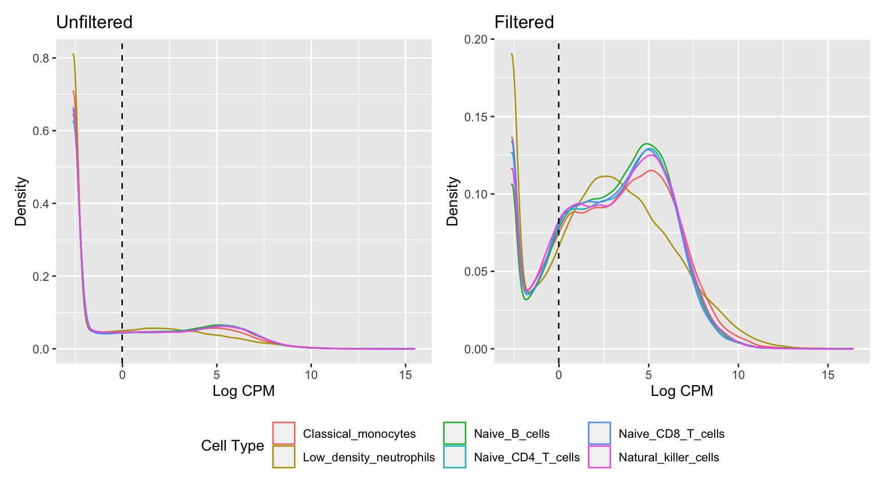
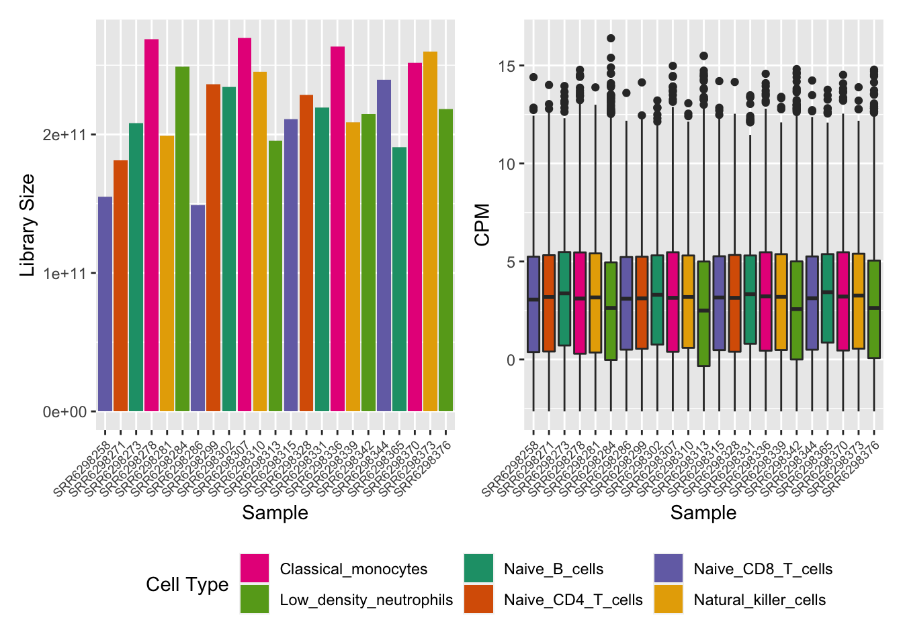
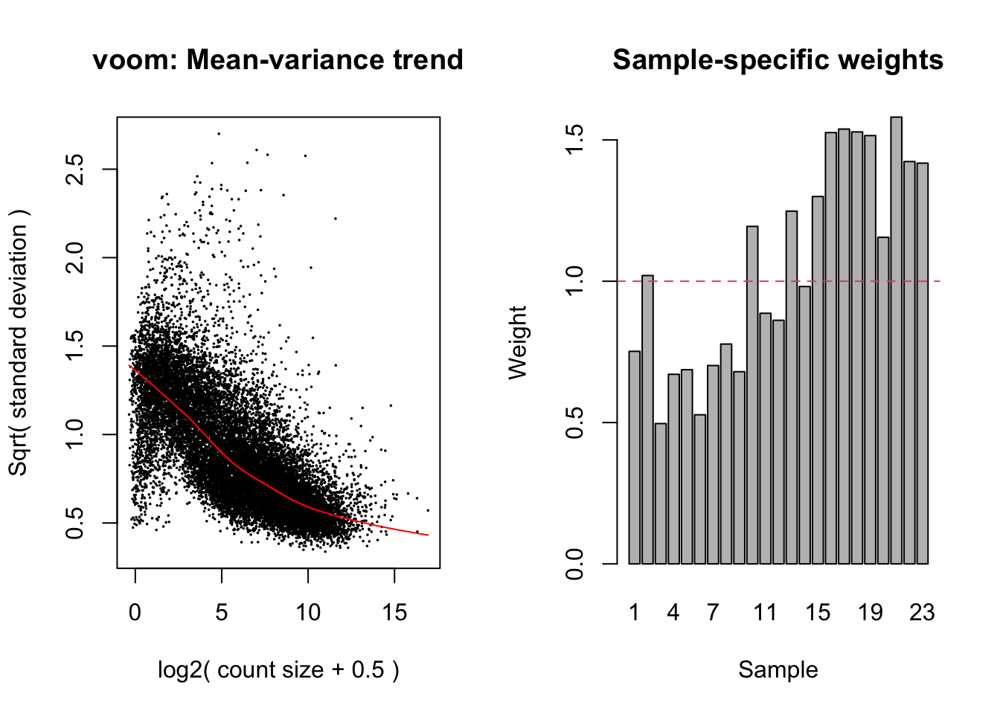
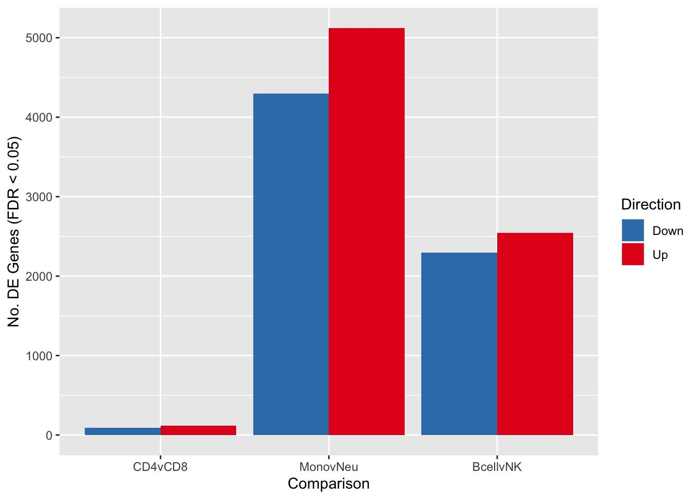

Gene set testing for Illumina HumanMethylation Arrays
Generating "truth" gene sets from RNA-seq data
Jovana Maksimovic, Alicia Oshlack and Belinda Phipson
March 29, 2021
Last updated: 2021-03-29
Checks: 7 0
Knit directory: methyl-geneset-testing/
This reproducible R Markdown analysis was created with workflowr (version 1.6.2). The Checks tab describes the reproducibility checks that were applied when the results were created. The Past versions tab lists the development history.
Great! Since the R Markdown file has been committed to the Git repository, you know the exact version of the code that produced these results.
Great job! The global environment was empty. Objects defined in the global environment can affect the analysis in your R Markdown file in unknown ways. For reproduciblity it's best to always run the code in an empty environment.
The command set.seed(20200302) was run prior to running the code in the R Markdown file. Setting a seed ensures that any results that rely on randomness, e.g. subsampling or permutations, are reproducible.
Great job! Recording the operating system, R version, and package versions is critical for reproducibility.
Nice! There were no cached chunks for this analysis, so you can be confident that you successfully produced the results during this run.
Great job! Using relative paths to the files within your workflowr project makes it easier to run your code on other machines.
Great! You are using Git for version control. Tracking code development and connecting the code version to the results is critical for reproducibility.
The results in this page were generated with repository version b33d804. See the Past versions tab to see a history of the changes made to the R Markdown and HTML files.
Note that you need to be careful to ensure that all relevant files for the analysis have been committed to Git prior to generating the results (you can use wflow_publish or wflow_git_commit). workflowr only checks the R Markdown file, but you know if there are other scripts or data files that it depends on. Below is the status of the Git repository when the results were generated:
Ignored files:
Ignored: .DS_Store
Ignored: .Rhistory
Ignored: .Rproj.user/
Ignored: analysis/figures.nb.html
Ignored: code/.DS_Store
Ignored: code/.Rhistory
Ignored: code/.job/
Ignored: code/old/
Ignored: data/.DS_Store
Ignored: data/annotations/
Ignored: data/cache-intermediates/
Ignored: data/cache-region/
Ignored: data/cache-rnaseq/
Ignored: data/cache-runtime/
Ignored: data/datasets/.DS_Store
Ignored: data/datasets/GSE110554-data.RData
Ignored: data/datasets/GSE120854/
Ignored: data/datasets/GSE120854_RAW.tar
Ignored: data/datasets/GSE135446-data.RData
Ignored: data/datasets/GSE135446/
Ignored: data/datasets/GSE135446_RAW.tar
Ignored: data/datasets/GSE95460_RAW.tar
Ignored: data/datasets/GSE95460_RAW/
Ignored: data/datasets/GSE95462-data.RData
Ignored: data/datasets/GSE95462/
Ignored: data/datasets/GSE95462_RAW/
Ignored: data/datasets/SRP100803/
Ignored: data/datasets/SRP125125/.DS_Store
Ignored: data/datasets/SRP125125/SRR6298*/
Ignored: data/datasets/SRP125125/SRR_Acc_List.txt
Ignored: data/datasets/SRP125125/SRR_Acc_List_Full.txt
Ignored: data/datasets/SRP125125/SraRunTable.txt
Ignored: data/datasets/SRP125125/multiqc_data/
Ignored: data/datasets/SRP125125/multiqc_report.html
Ignored: data/datasets/SRP125125/quants/
Ignored: data/datasets/SRP166862/
Ignored: data/datasets/SRP217468/
Ignored: data/datasets/TCGA.BRCA.rds
Ignored: data/datasets/TCGA.KIRC.rds
Ignored: data/misc/
Ignored: output/.DS_Store
Ignored: output/FDR-analysis/
Ignored: output/compare-methods/
Ignored: output/figures/
Ignored: output/methylgsa-params/
Ignored: output/outputs.tar.gz
Ignored: output/random-cpg-sims/
Ignored: output/test/
Note that any generated files, e.g. HTML, png, CSS, etc., are not included in this status report because it is ok for generated content to have uncommitted changes.
These are the previous versions of the repository in which changes were made to the R Markdown (analysis/04_expressionGenesets.Rmd) and HTML (docs/04_expressionGenesets.html) files. If you've configured a remote Git repository (see ?wflow_git_remote), click on the hyperlinks in the table below to view the files as they were in that past version.
| File | Version | Author | Date | Message |
|---|---|---|---|---|
| Rmd | d44c029 | JovMaksimovic | 2021-03-29 | Rename analysis files to reflect addition of new datasets |
library(tximport)
library(here)
library(tidyverse)
library(EnsDb.Hsapiens.v75)
library(readr)
library(limma)
library(edgeR)
library(glue)
library(patchwork)
library(biobroom)
library(ChAMP)
source(here("code/utility.R"))Data download, mapping and quantification
The RNAseq dataset used to generate the "truth" gene sets is avoilable from GEO at GSE107011 or SRA at SRP125125.
The RNAseq data was quasi-mapped and quantified using Salmon (v1.2.1) with the hg19_cdna human transcriptome downloaded from refgenie. The code used to perform the Salmon quasi-mapping and quantification can be found in code/salmon-quant.sh.
The Salmon mapping statistics can be veiwed here.
For downstream analysis that quantification files (quant.sf) for each sample are expected to be present in the following directory structure:
datadatasetsSRP125125quantsSRR6298258_quant- ...
- ...
SRR6298376_quant
Data import
Load sample information and file names.
targets <- read_csv(here("data/datasets/SRP125125/SraRunTableFull.txt"))
── Column specification ────────────────────────────────────────────────────────
cols(
.default = col_character()
)
ℹ Use `spec()` for the full column specifications.targets$Cell_type <- gsub(" ", "_", targets$Cell_type)
targets$Cell_type <- gsub("-", "_", targets$Cell_type)
targets# A tibble: 24 x 27
Run `Assay Type` AvgSpotLen Bases BioProject BioSample Bytes `Center Name`
<chr> <chr> <chr> <chr> <chr> <chr> <chr> <chr>
1 SRR62… RNA-Seq 100 1342… PRJNA4187… SAMN0803… 6876… GEO
2 SRR62… RNA-Seq 100 1427… PRJNA4187… SAMN0803… 7340… GEO
3 SRR62… RNA-Seq 100 1570… PRJNA4187… SAMN0803… 8071… GEO
4 SRR62… RNA-Seq 100 1904… PRJNA4187… SAMN0803… 9742… GEO
5 SRR62… RNA-Seq 100 1470… PRJNA4187… SAMN0803… 7564… GEO
6 SRR62… RNA-Seq 100 1248… PRJNA4187… SAMN0803… 6610… GEO
7 SRR62… RNA-Seq 100 2184… PRJNA4187… SAMN0803… 1114… GEO
8 SRR62… RNA-Seq 100 2065… PRJNA4187… SAMN0803… 1056… GEO
9 SRR62… RNA-Seq 100 1984… PRJNA4187… SAMN0803… 1014… GEO
10 SRR62… RNA-Seq 100 2082… PRJNA4187… SAMN0803… 1064… GEO
# … with 14 more rows, and 19 more variables: Consent <chr>,
# DATASTORE filetype <chr>, DATASTORE provider <chr>, DATASTORE region <chr>,
# Experiment <chr>, GEO_Accession (exp) <chr>, Instrument <chr>,
# LibraryLayout <chr>, LibrarySelection <chr>, LibrarySource <chr>,
# Organism <chr>, Platform <chr>, ReleaseDate <chr>, Sample Name <chr>,
# SRA Study <chr>, Cell_type <chr>, disease_status <chr>, gender <chr>,
# source_name <chr>Setup file paths and sample names.
files <- list.files(here("data/datasets/SRP125125/quants"),
recursive = TRUE, pattern = "quant.sf", full.names = TRUE)
pos <- regexpr("SRR6298[0-9][0-9][0-9]", files, perl = TRUE)
names(files) <- unname(substr(files, pos,
pos[1] + attr(pos, "match.length") - 1))
head(files) SRR6298258
"/Users/maksimovicjovana/Work/Research/methyl-geneset-testing/data/datasets/SRP125125/quants/SRR6298258_quant/quant.sf"
SRR6298271
"/Users/maksimovicjovana/Work/Research/methyl-geneset-testing/data/datasets/SRP125125/quants/SRR6298271_quant/quant.sf"
SRR6298273
"/Users/maksimovicjovana/Work/Research/methyl-geneset-testing/data/datasets/SRP125125/quants/SRR6298273_quant/quant.sf"
SRR6298278
"/Users/maksimovicjovana/Work/Research/methyl-geneset-testing/data/datasets/SRP125125/quants/SRR6298278_quant/quant.sf"
SRR6298281
"/Users/maksimovicjovana/Work/Research/methyl-geneset-testing/data/datasets/SRP125125/quants/SRR6298281_quant/quant.sf"
SRR6298284
"/Users/maksimovicjovana/Work/Research/methyl-geneset-testing/data/datasets/SRP125125/quants/SRR6298284_quant/quant.sf" Associate transcripts with gene IDs for gene-level summarization.
edb <- EnsDb.Hsapiens.v75
tx2gene <- transcripts(edb, columns = c("tx_id", "gene_id"),
return.type = "DataFrame")
tx2geneDataFrame with 215647 rows and 2 columns
tx_id gene_id
<character> <character>
1 ENST00000000233 ENSG00000004059
2 ENST00000000412 ENSG00000003056
3 ENST00000000442 ENSG00000173153
4 ENST00000001008 ENSG00000004478
5 ENST00000001146 ENSG00000003137
... ... ...
215643 LRG_94t1 LRG_94
215644 LRG_96t1 LRG_96
215645 LRG_97t1 LRG_97
215646 LRG_98t1 LRG_98
215647 LRG_99t1 LRG_99Import gene-level counts and abundances.
txiG <- tximport(files, type = "salmon", tx2gene = tx2gene,
countsFromAbundance = "lengthScaledTPM",
ignoreTxVersion = TRUE)reading in files with read_tsv1 2 3 4 5 6 7 8 9 10 11 12 13 14 15 16 17 18 19 20 21 22 23
summarizing abundance
summarizing counts
summarizing lengthcolnames(txiG$counts) <- names(files)
head(txiG$counts) SRR6298258 SRR6298271 SRR6298273 SRR6298278 SRR6298281
ENSG00000000003 61.8092088 64.34252 2.108605 7.108053 6.854211
ENSG00000000005 0.0000000 0.00000 0.000000 0.000000 0.000000
ENSG00000000419 308.0357168 453.78408 300.756056 184.887042 183.859446
ENSG00000000457 566.1655509 668.13279 536.765170 409.182211 554.068761
ENSG00000000460 88.1087011 149.58245 207.133830 96.734048 195.018761
ENSG00000000938 0.9993118 199.98401 6106.191865 17055.657470 15321.804086
SRR6298284 SRR6298286 SRR6298299 SRR6298302 SRR6298307
ENSG00000000003 12.16932 22.37741 207.2632 17.27445 4.634087
ENSG00000000005 0.00000 0.00000 0.0000 0.00000 0.000000
ENSG00000000419 137.81081 94.11433 324.2569 153.66560 285.821284
ENSG00000000457 506.88286 724.10043 831.8078 819.55366 287.623292
ENSG00000000460 36.97186 88.45333 305.1499 380.72895 250.642210
ENSG00000000938 6591.27698 64.65507 231.8483 5019.86572 17168.696404
SRR6298310 SRR6298313 SRR6298315 SRR6298328 SRR6298331
ENSG00000000003 5.597539 0.00000 191.5922 193.9760 12.63314
ENSG00000000005 0.000000 0.00000 0.0000 0.0000 0.00000
ENSG00000000419 157.483545 169.61751 411.3714 354.7413 245.31879
ENSG00000000457 577.570811 427.52646 528.0102 886.7599 639.44243
ENSG00000000460 245.554096 10.19566 121.0524 166.5221 259.31743
ENSG00000000938 12360.377205 9068.06785 49.0607 128.5385 5460.09143
SRR6298336 SRR6298339 SRR6298342 SRR6298344 SRR6298365
ENSG00000000003 7.548887 13.24455 9.167896 150.442321 6.321174
ENSG00000000005 0.000000 0.00000 0.000000 0.000000 0.000000
ENSG00000000419 414.301512 295.38687 299.028565 303.925491 389.002470
ENSG00000000457 251.307082 387.21898 289.416840 1037.669788 423.635676
ENSG00000000460 213.774478 186.27445 77.771446 230.877293 230.062502
ENSG00000000938 19652.208550 11370.32565 9706.096203 7.556217 3718.765758
SRR6298370 SRR6298373 SRR6298376
ENSG00000000003 2.440773 34.5469 23.76297
ENSG00000000005 0.000000 0.0000 0.00000
ENSG00000000419 287.085979 326.0884 254.49838
ENSG00000000457 279.957458 597.5548 292.36927
ENSG00000000460 113.801983 131.8787 84.14768
ENSG00000000938 21057.678193 16233.1932 12282.18942Set up DGElist object for downstream analysis.
z <- DGEList(txiG$counts)
z$genes <- ensembldb::genes(edb, filter = GeneIdFilter(rownames(z)),
columns = c("gene_id", "symbol", "entrezid"),
return.type = "DataFrame")
z$genes$entrezid <- sapply(z$genes$entrezid, function(x) x[1])
z$genes$length <- rowMedians(txiG$length)
targets <- targets[match(colnames(z), targets$Run), ]
z$samples$group <- targets$Cell_type
zAn object of class "DGEList"
$counts
SRR6298258 SRR6298271 SRR6298273 SRR6298278 SRR6298281
ENSG00000000003 61.80921 64.34252 2.108605 7.108053 6.854211
ENSG00000000005 0.00000 0.00000 0.000000 0.000000 0.000000
ENSG00000000419 308.03572 453.78408 300.756056 184.887042 183.859446
ENSG00000000457 566.16555 668.13279 536.765170 409.182211 554.068761
ENSG00000000460 88.10870 149.58245 207.133830 96.734048 195.018761
SRR6298284 SRR6298286 SRR6298299 SRR6298302 SRR6298307
ENSG00000000003 12.16932 22.37741 207.2632 17.27445 4.634087
ENSG00000000005 0.00000 0.00000 0.0000 0.00000 0.000000
ENSG00000000419 137.81081 94.11433 324.2569 153.66560 285.821284
ENSG00000000457 506.88286 724.10043 831.8078 819.55366 287.623292
ENSG00000000460 36.97186 88.45333 305.1499 380.72895 250.642210
SRR6298310 SRR6298313 SRR6298315 SRR6298328 SRR6298331
ENSG00000000003 5.597539 0.00000 191.5922 193.9760 12.63314
ENSG00000000005 0.000000 0.00000 0.0000 0.0000 0.00000
ENSG00000000419 157.483545 169.61751 411.3714 354.7413 245.31879
ENSG00000000457 577.570811 427.52646 528.0102 886.7599 639.44243
ENSG00000000460 245.554096 10.19566 121.0524 166.5221 259.31743
SRR6298336 SRR6298339 SRR6298342 SRR6298344 SRR6298365
ENSG00000000003 7.548887 13.24455 9.167896 150.4423 6.321174
ENSG00000000005 0.000000 0.00000 0.000000 0.0000 0.000000
ENSG00000000419 414.301512 295.38687 299.028565 303.9255 389.002470
ENSG00000000457 251.307082 387.21898 289.416840 1037.6698 423.635676
ENSG00000000460 213.774478 186.27445 77.771446 230.8773 230.062502
SRR6298370 SRR6298373 SRR6298376
ENSG00000000003 2.440773 34.5469 23.76297
ENSG00000000005 0.000000 0.0000 0.00000
ENSG00000000419 287.085979 326.0884 254.49838
ENSG00000000457 279.957458 597.5548 292.36927
ENSG00000000460 113.801983 131.8787 84.14768
36675 more rows ...
$samples
group lib.size norm.factors
SRR6298258 Naive_CD8_T_cells 8546013 1
SRR6298271 Naive_CD4_T_cells 9992761 1
SRR6298273 Naive_B_cells 11476629 1
SRR6298278 Classical_monocytes 14825624 1
SRR6298281 Natural_killer_cells 10978058 1
18 more rows ...
$genes
DataFrame with 36680 rows and 4 columns
gene_id symbol entrezid length
<character> <character> <integer> <numeric>
1 ENSG00000000003 TSPAN6 7105 1966.238
2 ENSG00000000005 TNMD 64102 704.094
3 ENSG00000000419 DPM1 8813 838.868
4 ENSG00000000457 SCYL3 57147 3715.563
5 ENSG00000000460 C1orf112 55732 2687.244
... ... ... ... ...
36676 ENSG00000273439 ZNF8 7554 1972.2820
36677 ENSG00000273444 RP5-1147A1.2 NA 39.8542
36678 ENSG00000273452 AC005358.1 NA 1817.5722
36679 ENSG00000273463 AL138834.1 NA 426.5972
36680 ENSG00000273484 OR6R2P NA 92.8252Quality control
Genes that do not have an adequate number of reads in any sample should be filtered out prior to downstream analyses. From a biological perspective, genes that are not expressed at a biologically meaningful level in any condition are not of interest. Statistically, we get a better estimate of the mean-variance relationship in the data and reduce the number of statistical tests that are performes during differential expression analyses.
Filter out lowly expressed genes and calculate TMM normalisation factors.
keep <- filterByExpr(z, group = z$samples$group)
x <- z[keep, ]
y <- calcNormFactors(x)
yAn object of class "DGEList"
$counts
SRR6298258 SRR6298271 SRR6298273 SRR6298278 SRR6298281
ENSG00000000003 61.8092088 64.34252 2.108605 7.108053 6.854211
ENSG00000000419 308.0357168 453.78408 300.756056 184.887042 183.859446
ENSG00000000457 566.1655509 668.13279 536.765170 409.182211 554.068761
ENSG00000000460 88.1087011 149.58245 207.133830 96.734048 195.018761
ENSG00000000938 0.9993118 199.98401 6106.191865 17055.657470 15321.804086
SRR6298284 SRR6298286 SRR6298299 SRR6298302 SRR6298307
ENSG00000000003 12.16932 22.37741 207.2632 17.27445 4.634087
ENSG00000000419 137.81081 94.11433 324.2569 153.66560 285.821284
ENSG00000000457 506.88286 724.10043 831.8078 819.55366 287.623292
ENSG00000000460 36.97186 88.45333 305.1499 380.72895 250.642210
ENSG00000000938 6591.27698 64.65507 231.8483 5019.86572 17168.696404
SRR6298310 SRR6298313 SRR6298315 SRR6298328 SRR6298331
ENSG00000000003 5.597539 0.00000 191.5922 193.9760 12.63314
ENSG00000000419 157.483545 169.61751 411.3714 354.7413 245.31879
ENSG00000000457 577.570811 427.52646 528.0102 886.7599 639.44243
ENSG00000000460 245.554096 10.19566 121.0524 166.5221 259.31743
ENSG00000000938 12360.377205 9068.06785 49.0607 128.5385 5460.09143
SRR6298336 SRR6298339 SRR6298342 SRR6298344 SRR6298365
ENSG00000000003 7.548887 13.24455 9.167896 150.442321 6.321174
ENSG00000000419 414.301512 295.38687 299.028565 303.925491 389.002470
ENSG00000000457 251.307082 387.21898 289.416840 1037.669788 423.635676
ENSG00000000460 213.774478 186.27445 77.771446 230.877293 230.062502
ENSG00000000938 19652.208550 11370.32565 9706.096203 7.556217 3718.765758
SRR6298370 SRR6298373 SRR6298376
ENSG00000000003 2.440773 34.5469 23.76297
ENSG00000000419 287.085979 326.0884 254.49838
ENSG00000000457 279.957458 597.5548 292.36927
ENSG00000000460 113.801983 131.8787 84.14768
ENSG00000000938 21057.678193 16233.1932 12282.18942
18116 more rows ...
$samples
group lib.size norm.factors
SRR6298258 Naive_CD8_T_cells 8546013 1.2429013
SRR6298271 Naive_CD4_T_cells 9992761 1.2126078
SRR6298273 Naive_B_cells 11476629 0.9964633
SRR6298278 Classical_monocytes 14825624 0.7306961
SRR6298281 Natural_killer_cells 10978058 1.0729896
18 more rows ...
$genes
DataFrame with 18121 rows and 4 columns
gene_id symbol entrezid length
<character> <character> <integer> <numeric>
1 ENSG00000000003 TSPAN6 7105 1966.238
2 ENSG00000000419 DPM1 8813 838.868
3 ENSG00000000457 SCYL3 57147 3715.563
4 ENSG00000000460 C1orf112 55732 2687.244
5 ENSG00000000938 FGR 2268 1818.207
... ... ... ... ...
18117 ENSG00000273398 RP11-474G23.1 NA 2069.22
18118 ENSG00000273423 OR13I1P NA 1026.28
18119 ENSG00000273425 AC073107.1 NA 1492.08
18120 ENSG00000273429 AC253572.2 NA 1540.08
18121 ENSG00000273439 ZNF8 7554 1972.28Plotting the distribution log-CPM values shows that a majority of genes within each sample are either not expressed or lowly-expressed with log-CPM values that are small or negative.
L <- mean(z$samples$lib.size) * 1e-6
M <- median(z$samples$lib.size) * 1e-6
dat <- tidy(z, addSamples = TRUE)Warning: `tbl_df()` was deprecated in dplyr 1.0.0.
Please use `tibble::as_tibble()` instead.dat$cpm <- reshape2::melt(cpm(z, log = TRUE), value.name = "cpm")$cpm
p1 <- ggplot(dat, aes(x = cpm, colour = group)) +
geom_density() +
labs(colour = "Cell Type", x = "Log CPM", y = "Density",
title = "Unfiltered") +
geom_vline(xintercept = log2(10/M + 2/L), linetype = "dashed")
dat <- tidy(y, addSamples = TRUE)
dat$cpm <- reshape2::melt(cpm(y, log = TRUE), value.name = "cpm")$cpm
p2 <- ggplot(dat, aes(x = cpm, colour = group)) +
geom_density() +
labs(colour = "Cell Type", x = "Log CPM", y = "Density",
title = "Filtered") +
geom_vline(xintercept = log2(10/M + 2/L), linetype = "dashed")
p1 + p2 + plot_layout(guides = "collect") & theme(legend.position = "bottom")
cellPal <- RColorBrewer::brewer.pal(6, "Dark2")[c(4, 5, 1, 2, 3, 6)]
dat <- tidy(y, addSamples = TRUE)
p1 <- ggplot(dat, aes(x = sample, y = lib.size, fill = group)) +
geom_bar(stat = "identity") +
labs(fill = "Cell Type", x = "Sample", y = "Library Size") +
scale_fill_manual(values = cellPal) +
theme(axis.text.x = element_text(angle = 45, hjust = 1, size = 7),
legend.position = "bottom")
dat$cpm <- reshape2::melt(cpm(y, log = TRUE), value.name = "cpm")$cpm
p2 <- ggplot(dat, aes(x = sample, y = cpm, fill = group)) +
geom_boxplot(show.legend = FALSE) +
labs(x = "Sample", y = "CPM") +
theme(axis.text.x = element_text(angle = 45, hjust = 1, size = 7),
legend.position = "bottom") +
scale_fill_manual(values = cellPal)
p <- p1 + p2 + plot_layout(guides = "collect") & theme(legend.position = "bottom")
p
Save figure for use in manuscript.
outDir <- here::here("output/figures")
if (!dir.exists(outDir)) dir.create(outDir)
fig <- here("output/figures/SFig-4A.rds")
saveRDS(p1, fig, compress = FALSE)
fig <- here("output/figures/SFig-4B.rds")
saveRDS(p2, fig, compress = FALSE)Multi-dimensional scaling (MDS) plots show the largest sources of variation in the data. They are a good way of exploring the relationships between the samples and identifying structure in the data. The following series of MDS plots examines the first four principal components.
lcpm <- cpm(y, log = TRUE)
dims <- list(c(1,2), c(1,3), c(2,3), c(3,4))
p <- vector("list", length(dims))
for(i in 1:length(dims)){
tmp <- plotMDS(lcpm, top=1000, gene.selection="common", plot = FALSE,
dim.plot = dims[[i]])
dat <-data.frame(x = tmp$x, y = tmp$y, cellType = targets$Cell_type)
p[[i]] <- ggplot(dat, aes(x = x, y = y, colour = cellType)) +
geom_point() +
scale_colour_manual(values = cellPal) +
labs(colour = "Cell Type", x = glue("PC {tmp$dim.plot[1]}"),
y = glue("PC {tmp$dim.plot[2]}"))
}
(p[[1]] | p[[2]]) / (p[[3]] | p[[4]]) + plot_layout(guides = "collect")
Save figure for use in manuscript.
fig <- here("output/figures/SFig-4C.rds")
saveRDS(p[[1]], fig, compress = FALSE)Differential expression analysis
The TMM normalised data was transformed using voomWithQualityWeights. This takes into account the differing library sizes and the mean variance relationship in the data as well as calculating sample-specific quality weights. Linear models were fit using limma, taking into account the voom weights.
design <- model.matrix(~0+y$samples$group, data = targets)
colnames(design) <- c(levels(factor(y$samples$group)))
v <- voomWithQualityWeights(y, design, plot = TRUE)
cont <- makeContrasts(CD4vCD8=Naive_CD4_T_cells-Naive_CD8_T_cells,
MonovNeu=Classical_monocytes-Low_density_neutrophils,
BcellvNK=Naive_B_cells-Natural_killer_cells,
levels=design)
fit <- lmFit(v, design)
cfit <- contrasts.fit(fit, cont)
fit2 <- eBayes(cfit, robust = TRUE)
summary(decideTests(fit2, p.value = 0.05)) CD4vCD8 MonovNeu BcellvNK
Down 89 4295 2293
NotSig 17917 8703 13282
Up 115 5123 2546fitSum <- summary(decideTests(fit2, p.value = 0.05))
dat <- reshape2::melt(fitSum[rownames(fitSum) != "NotSig", ])
colnames(dat) <- c("dir","comp","num")
p <- ggplot(dat, aes(x = comp, y = num, fill = dir)) +
geom_bar(stat = "identity", position = "dodge") +
labs(x = "Comparison", y = "No. DE Genes (FDR < 0.05)", fill = "Direction") +
scale_fill_brewer(palette = "Set1", direction = -1)
p
Save figure for use in manuscript.
fig <- here("output/figures/SFig-4D.rds")
saveRDS(p, fig, compress = FALSE)Gene set testing
Testing for enrichment of GO categories and KEGG pathways amongst statistically significant differentially expressed genes.
Save results as RDS objects for use as "truth" sets in methylation analyses.
go <- NULL
kegg <- NULL
for(i in 1:ncol(cont)){
top <- topTable(fit2, coef = i, p.value = 0.05, number = Inf)
tmp <- goana(top$entrezid, universe = v$genes$entrezid,
covariate = v$genes$length)
tmp <- topGO(tmp, number = Inf)
tmp$FDR <- p.adjust(tmp$P.DE, method = "BH")
tmp <- rownames_to_column(tmp, var = "ID")
tmp$contrast <- colnames(cont)[i]
go <- bind_rows(go, tmp)
tmp <- kegga(top$entrezid, universe = v$genes$entrezid, species = "Hs",
covariate = v$genes$length, species.KEGG = "hsa")
tmp <- topKEGG(tmp, number = Inf)
tmp$FDR <- p.adjust(tmp$P.DE, method = "BH")
tmp <- rownames_to_column(tmp, var = "PID")
tmp$contrast <- colnames(cont)[i]
kegg <- bind_rows(kegg, tmp)
}Warning in rowsum.default(covariate, group = universe, reorder = FALSE): missing
values for 'group'Warning in rowsum.default(rep_len(1L, length(universe)), group = universe, :
missing values for 'group'Warning in rowsum.default(covariate, group = universe, reorder = FALSE): missing
values for 'group'Warning in rowsum.default(rep_len(1L, length(universe)), group = universe, :
missing values for 'group'Warning in rowsum.default(covariate, group = universe, reorder = FALSE): missing
values for 'group'Warning in rowsum.default(rep_len(1L, length(universe)), group = universe, :
missing values for 'group'outDir <- here::here("data/cache-rnaseq")
if (!dir.exists(outDir)) dir.create(outDir)
saveRDS(go, here(glue("data/cache-rnaseq/RNAseq-GO.rds")))
saveRDS(kegg, here(glue("data/cache-rnaseq/RNAseq-KEGG.rds")))Test whether the BROAD sets are enriched for the differentially expressed genes using the gsaseq function that can be found in code/utility.R
data(PathwayList)
keep <- sapply(PathwayList, function(x) any(x %in% v$genes$symbol))
ensembl <- suppressMessages(lapply(PathwayList[keep], function(x){
tmp <- v$genes$gene_id[v$genes$symbol %in% x]
tmp[!is.na(tmp)]
}))
entrez <- suppressMessages(lapply(ensembl, function(x){
tmp <- unname(v$genes$entrezid[v$genes$gene_id %in% x])
tmp[!is.na(tmp)]
}))
gsa <- NULL
for(i in 1:ncol(cont)){
top <- topTable(fit2, coef = i, p.value = 0.05, number = Inf)
tmp <- gsaseq(top$entrezid, universe = v$genes$entrezid,
collection = entrez, gene.length = v$genes$length)
tmp <- rownames_to_column(data.frame(tmp), var = "ID")
tmp$contrast <- colnames(cont)[i]
gsa <- bind_rows(gsa, tmp)
}
saveRDS(gsa, here("data/cache-rnaseq/RNAseq-BROAD-GSA.rds"))
sessionInfo()R version 4.0.3 (2020-10-10)
Platform: x86_64-apple-darwin17.0 (64-bit)
Running under: macOS Mojave 10.14.6
Matrix products: default
BLAS: /Library/Frameworks/R.framework/Versions/4.0/Resources/lib/libRblas.dylib
LAPACK: /Library/Frameworks/R.framework/Versions/4.0/Resources/lib/libRlapack.dylib
locale:
[1] en_AU.UTF-8/en_AU.UTF-8/en_AU.UTF-8/C/en_AU.UTF-8/en_AU.UTF-8
attached base packages:
[1] stats4 parallel stats graphics grDevices utils datasets
[8] methods base
other attached packages:
[1] ChAMP_2.20.1
[2] RPMM_1.25
[3] cluster_2.1.1
[4] DT_0.17
[5] IlluminaHumanMethylationEPICmanifest_0.3.0
[6] Illumina450ProbeVariants.db_1.26.0
[7] DMRcate_2.4.1
[8] ChAMPdata_2.22.0
[9] minfi_1.36.0
[10] bumphunter_1.32.0
[11] locfit_1.5-9.4
[12] iterators_1.0.13
[13] foreach_1.5.1
[14] Biostrings_2.58.0
[15] XVector_0.30.0
[16] SummarizedExperiment_1.20.0
[17] MatrixGenerics_1.2.1
[18] matrixStats_0.58.0
[19] biobroom_1.22.0
[20] broom_0.7.5
[21] patchwork_1.1.1
[22] glue_1.4.2
[23] edgeR_3.32.1
[24] limma_3.46.0
[25] EnsDb.Hsapiens.v75_2.99.0
[26] ensembldb_2.14.0
[27] AnnotationFilter_1.14.0
[28] GenomicFeatures_1.42.2
[29] AnnotationDbi_1.52.0
[30] Biobase_2.50.0
[31] GenomicRanges_1.42.0
[32] GenomeInfoDb_1.26.4
[33] IRanges_2.24.1
[34] S4Vectors_0.28.1
[35] BiocGenerics_0.36.0
[36] forcats_0.5.1
[37] stringr_1.4.0
[38] dplyr_1.0.5
[39] purrr_0.3.4
[40] readr_1.4.0
[41] tidyr_1.1.3
[42] tibble_3.1.0
[43] ggplot2_3.3.3
[44] tidyverse_1.3.0
[45] here_1.0.1
[46] tximport_1.18.0
[47] workflowr_1.6.2
loaded via a namespace (and not attached):
[1] rappdirs_0.3.3
[2] rtracklayer_1.50.0
[3] R.methodsS3_1.8.1
[4] wateRmelon_1.34.0
[5] bit64_4.0.5
[6] knitr_1.31
[7] DelayedArray_0.16.3
[8] R.utils_2.10.1
[9] data.table_1.14.0
[10] rpart_4.1-15
[11] doParallel_1.0.16
[12] RCurl_1.98-1.3
[13] GEOquery_2.58.0
[14] generics_0.1.0
[15] preprocessCore_1.52.1
[16] RSQLite_2.2.5
[17] combinat_0.0-8
[18] bit_4.0.4
[19] xml2_1.3.2
[20] lubridate_1.7.10
[21] httpuv_1.5.5
[22] assertthat_0.2.1
[23] IlluminaHumanMethylation450kmanifest_0.4.0
[24] viridis_0.5.1
[25] isva_1.9
[26] IlluminaHumanMethylationEPICanno.ilm10b4.hg19_0.6.0
[27] xfun_0.22
[28] hms_1.0.0
[29] jquerylib_0.1.3
[30] DNAcopy_1.64.0
[31] evaluate_0.14
[32] missMethyl_1.24.0
[33] promises_1.2.0.1
[34] fansi_0.4.2
[35] scrime_1.3.5
[36] progress_1.2.2
[37] dendextend_1.14.0
[38] dbplyr_2.1.0
[39] readxl_1.3.1
[40] DBI_1.1.1
[41] htmlwidgets_1.5.3
[42] reshape_0.8.8
[43] ROC_1.66.0
[44] ellipsis_0.3.1
[45] backports_1.2.1
[46] permute_0.9-5
[47] annotate_1.68.0
[48] biomaRt_2.46.3
[49] sparseMatrixStats_1.2.1
[50] vctrs_0.3.6
[51] cachem_1.0.4
[52] withr_2.4.1
[53] globaltest_5.44.0
[54] Gviz_1.34.1
[55] BSgenome_1.58.0
[56] checkmate_2.0.0
[57] GenomicAlignments_1.26.0
[58] prettyunits_1.1.1
[59] mclust_5.4.7
[60] ExperimentHub_1.16.0
[61] lazyeval_0.2.2
[62] crayon_1.4.1
[63] genefilter_1.72.1
[64] labeling_0.4.2
[65] pkgconfig_2.0.3
[66] nlme_3.1-152
[67] ProtGenerics_1.22.0
[68] nnet_7.3-15
[69] rlang_0.4.10
[70] nleqslv_3.3.2
[71] lifecycle_1.0.0
[72] affyio_1.60.0
[73] BiocFileCache_1.14.0
[74] modelr_0.1.8
[75] AnnotationHub_2.22.0
[76] dichromat_2.0-0
[77] cellranger_1.1.0
[78] rprojroot_2.0.2
[79] rngtools_1.5
[80] IlluminaHumanMethylation450kanno.ilmn12.hg19_0.6.0
[81] base64_2.0
[82] Matrix_1.3-2
[83] Rhdf5lib_1.12.1
[84] reprex_1.0.0
[85] base64enc_0.1-3
[86] geneLenDataBase_1.26.0
[87] whisker_0.4
[88] viridisLite_0.3.0
[89] png_0.1-7
[90] bitops_1.0-6
[91] R.oo_1.24.0
[92] KernSmooth_2.23-18
[93] rhdf5filters_1.2.0
[94] blob_1.2.1
[95] DelayedMatrixStats_1.12.3
[96] doRNG_1.8.2
[97] qvalue_2.22.0
[98] nor1mix_1.3-0
[99] jpeg_0.1-8.1
[100] scales_1.1.1
[101] memoise_2.0.0
[102] magrittr_2.0.1
[103] plyr_1.8.6
[104] zlibbioc_1.36.0
[105] compiler_4.0.3
[106] RColorBrewer_1.1-2
[107] illuminaio_0.32.0
[108] clue_0.3-58
[109] JADE_2.0-3
[110] affy_1.68.0
[111] Rsamtools_2.6.0
[112] cli_2.3.1
[113] DSS_2.38.0
[114] htmlTable_2.1.0
[115] Formula_1.2-4
[116] mgcv_1.8-34
[117] MASS_7.3-53.1
[118] tidyselect_1.1.0
[119] stringi_1.5.3
[120] highr_0.8
[121] yaml_2.2.1
[122] askpass_1.1
[123] latticeExtra_0.6-29
[124] grid_4.0.3
[125] sass_0.3.1
[126] VariantAnnotation_1.36.0
[127] tools_4.0.3
[128] rstudioapi_0.13
[129] foreign_0.8-81
[130] git2r_0.28.0
[131] bsseq_1.26.0
[132] gridExtra_2.3
[133] farver_2.1.0
[134] digest_0.6.27
[135] BiocManager_1.30.12
[136] shiny_1.6.0
[137] quadprog_1.5-8
[138] Rcpp_1.0.6
[139] siggenes_1.64.0
[140] BiocVersion_3.12.0
[141] later_1.1.0.1
[142] org.Hs.eg.db_3.12.0
[143] httr_1.4.2
[144] biovizBase_1.38.0
[145] lumi_2.42.0
[146] colorspace_2.0-0
[147] rvest_1.0.0
[148] XML_3.99-0.6
[149] fs_1.5.0
[150] splines_4.0.3
[151] statmod_1.4.35
[152] kpmt_0.1.0
[153] multtest_2.46.0
[154] shinythemes_1.2.0
[155] plotly_4.9.3
[156] xtable_1.8-4
[157] jsonlite_1.7.2
[158] marray_1.68.0
[159] R6_2.5.0
[160] Hmisc_4.5-0
[161] pillar_1.5.1
[162] htmltools_0.5.1.1
[163] mime_0.10
[164] fastmap_1.1.0
[165] BiocParallel_1.24.1
[166] interactiveDisplayBase_1.28.0
[167] beanplot_1.2
[168] codetools_0.2-18
[169] utf8_1.2.1
[170] sva_3.38.0
[171] lattice_0.20-41
[172] bslib_0.2.4
[173] BiasedUrn_1.07
[174] curl_4.3
[175] gtools_3.8.2
[176] GO.db_3.12.1
[177] openssl_1.4.3
[178] survival_3.2-10
[179] methylumi_2.36.0
[180] rmarkdown_2.7
[181] fastICA_1.2-2
[182] munsell_0.5.0
[183] rhdf5_2.34.0
[184] GenomeInfoDbData_1.2.4
[185] goseq_1.42.0
[186] impute_1.64.0
[187] HDF5Array_1.18.1
[188] reshape2_1.4.4
[189] haven_2.3.1
[190] gtable_0.3.0